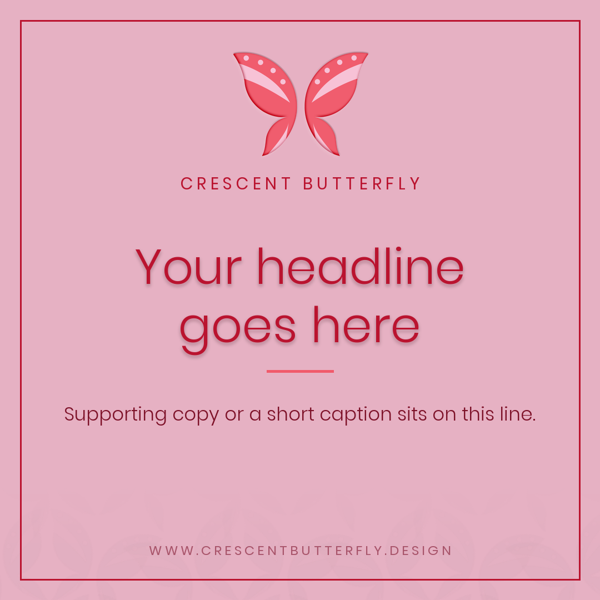
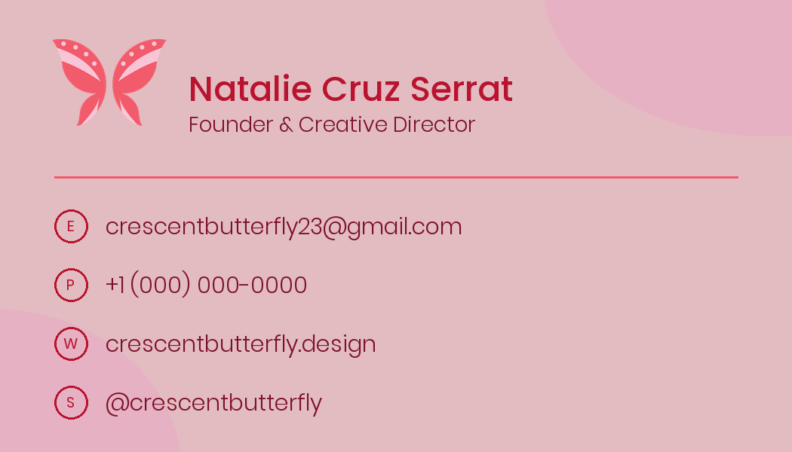

Crescent Butterfly
Crescent Butterfly
Crescent Butterfly
Crescent Butterfly
Crescent Butterfly Studio · Est. 2025
Brand, print & digital design by Natalie Cruz Serrat.
In a world where craftsmanship meets wonder, a brand should be more than a logo.
It should be a considered system — precise, cohesive and unmistakably yours.

Digital & Social →
Print Design →Crescent ButterflyStart with a short guided brief and I'll shape the direction with you.
Start a projectGood design is quiet precision. Great design also has a little wonder in it.
Graduated in graphic design with a habit that stuck: reworking every detail until it sings.
Sketches became a crescent-winged butterfly, then a full identity: embossed, dusty-rose, unmistakable.
Cards, templates, guidelines and the first client work under one quiet, cohesive system.
One strong website, one well-made ad, one great designer, studied daily. Read the journal.
Taking on brand, print and digital work. Yours could be the next story on this timeline.
Launching a brand, refreshing your look, or need a designer in your corner? Tell me about it.
Start a project